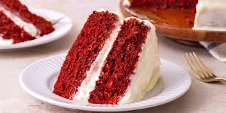

Red Velvet Cake's Recipe

Description
This is a classic red velvet cake recipe that is perfect for any celebration. It's moist, flavorful, and topped with a rich cream cheese frosting.
Ingredients
- 2 1/2 cups all-purpose flour
- 1 1/2 cups sugar
- 1 teaspoon baking soda
- 1 teaspoon salt
- 1 teaspoon cocoa powder
- 1 1/2 cups vegetable oil
- 1 cup buttermilk, room temperature
- 2 large eggs, room temperature
- 2 tablespoons red food coloring
- 1 teaspoon white distilled vinegar
- 1 teaspoon vanilla extract
Steps
- Preheat your oven to 350°F (175°C). Grease and flour two 9-inch round cake pans.
- In a large bowl, sift together the flour, sugar, baking soda, salt, and cocoa powder.
- In another bowl, whisk together the vegetable oil, buttermilk, eggs, red food coloring, vinegar, and vanilla extract.
- Gradually add the wet ingredients to the dry ingredients and mix until just combined.
- Divide the batter evenly between the prepared cake pans.
- Bake for 30-35 minutes or until a toothpick inserted into the center comes out clean.
- Let the cakes cool in the pans for 10 minutes, then remove from pans and cool completely on a wire rack.
- Once the cakes are completely cool, frost with cream cheese frosting and serve.
Back to Homepage